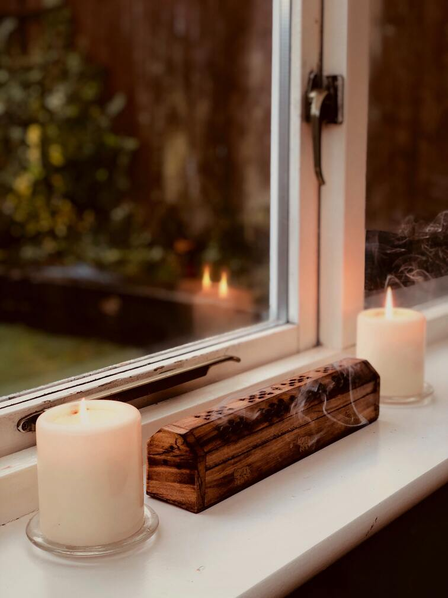
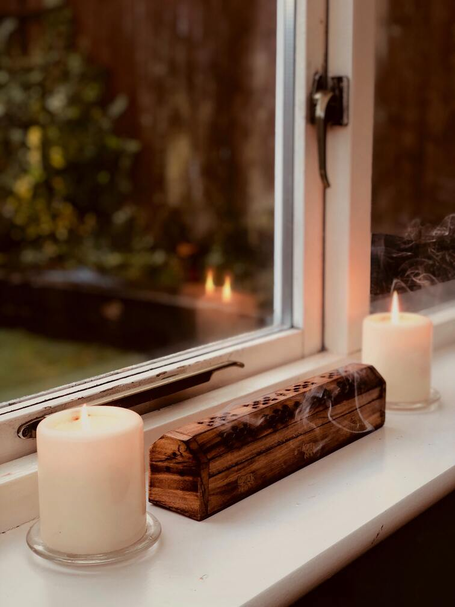

Meditation is a powerful process by which you can find peace and a sense of calmness whenever you require it. Meditating for as little as 10 minutes can lower your heart rate and blood pressure, reduce fatigue, and improve your mood.
How to begin ...
- Find yourself a quiet room
- Sit comfortably and relax
- Close your eyes and breathe
- Stay here for as long as you feel necessary
- Over time, as you become more comfortable...
Meditation can be done in any position: laying down, sat upright, cross legged, just so long as you are comfortable.
Begin to focus on your breathing. Starting out, it'll be difficult to quiet your mind, so focusing on every inhale and exhale will really help you to get into that relaxed state.
Meditation is a very personal experience. There is no scrict length of time you must stay here. At any point, you can open your eyes and come back to the world.
You'll fall into the state much easier. You can begin to center meditation around certain themes which will allow you to find clarity in situations that present themselves to you in your daily life.
 
